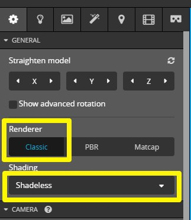
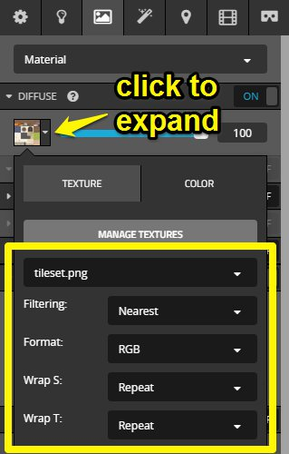
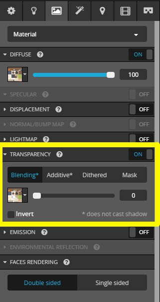
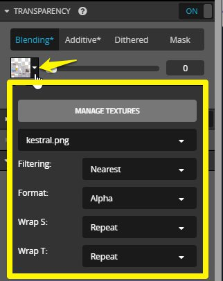

Exporting for Sketchfab¶
These are settings I've found to be a good base for making your low poly pixel art texture models look good in Sketchfab. Think of this as a base, there are additional ways to make presenting your models more eye catching in Sketchfab!
Power of Two Textures¶
If you've read the previous guides, you may know by now how important it is to have power of two sized textures for your 3D models, and it is especially important with Sketchfab.
The technology used by Sketchfab to display models is sensitive to sizes and non power of two textures will have artifacts no matter how closely you follow the rest of this guide.
There are workarounds to this limitation if necessary, but it will always result in some artifacts.
Export To Sketchfab¶
Sketchfab has an exporter for Blender that can easily upload your work from inside Blender.
Just install the Blender exporter and follow the export tutorial.
Sketchfab 3D Settings¶
Once you've exported your model from Blender to Sketchfab, go to the sketchfab website in your browser and edit the 3D settings for your model.

First, set the renderer and shading type to Classic and Shadeless respectively.

Next, go to the Materials tab, and in the diffuse settings expand the dropdown to get to texture settings. Set filtering to Nearest, format to RGB, and both wrap settings to Repeat

Next, scroll down to the transparency settings and set it to Blending, with the slider turned all the way down to zero.

And finally, expand the dropdown in the transparency to get to the alpha texture settings. Set filtering to Nearest, the format to Alpha, and both wrap settings to Repeat

These settings provide a good base for the low poly pixel art style of 3D. You can experiment with the how you present your models by playing with the post processing effects on Sketchfab, or even trying out animations.
Non Power of Two Workaround¶
If your texture cannot be power of two, one thing you can do is to scale up the texture by 2x, 3x, or 4x in an image editor. This will result in a larger texture, but may hide some of the artifacts caused by smaller non power of two sized textures.